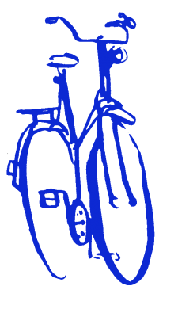

- Kapoenen: Dit is de groep voor kinderen tussen 6 en 8 jaar.
Het leven van een kapoen is er één vol spel, fantasie, creativiteit en expressie. En daar spelen we volop op in. Het hoogtepunt in een kapoenenleven? Voor de eerste keer op kamp!
- Wouters: Dit is de groep voor kinderen tussen 8 en 11 jaar. Deze groep wordt nog opgedeeld in Kabouters(Meisjes) en Welpen(Jongens).

Is het leven een jungle of een speeltuin? Welpen en Kabouters leren zelf spannende dingen doen. Hun eigen lokaal inrichten, muziekinstrumenten maken, in bomen klimmen, kampen bouwen onder de blote hemel ...
- JongGivers: Dit is de groep voor kinderen tussen 11 en 14 jaar. Deze groep wordt nog opgedeeld in JongGidsen(Meisjes) en JongVerkenners(Jongens).

Op woudlopersavontuur met de rugzak of op fietstocht met de patrouille. Een vlot sjorren of vuurtjes stoken en je eigen potje koken. Zo leren we de kneepjes van het vak. Een toneelstuk in mekaar steken en je creativiteit botvieren of stevig spelen en sporten: jonggivers zijn aan zet!
- Givers: Dit is de groep voor kinderen tussen 14 en jaar 17.
We gaan een stapje verder. Gidsen en Verkenners bieden we alle kansen om te bewijzen wat ze in hun mars hebben. Er is ruimte om te experimenteren en mee te beslissen. Grootse projecten kleuren hun scoutsdag, maar gewoon gezellig samen zijn hoort er ook bij.
- Jin: Dit is de groep voor 17 en 18-jarigen.
Wat is Jin zijn? Dat bepalen ze zelf. Leiding is geen leiding meer, maar begeleiding. Wie weet slaan ze dit jaar hun tenten in het buitenland op, krijgt het jinlokaal een Keith Harring-look of is muziek de factor die hen bindt. Inspraak, ploeggeest en zelfstandigheid staan voorop. Jins zijn zwervers; blijvend onderweg ...
- Leiding: Vanaf 18 jaar.

Leiders en leidsters zijn jonge mensen die in hun vrije tijd zorgen voor sfeer, activiteiten en werking per tak en per groep; ze doen dat door samen met hun leden te spelen en met hen onderweg te zijn. Leiding is verantwoordelijk voor de organisatie en het toezicht tijdens scouting. Scouts en Gidsen Vlaanderen voorziet een vormingsaanbod voor leid(st)ers.
- GroepsLeiding: Wordt gekozen door de leidingsploeg in het begin van elk jaar.

Groepsleiding neemt de groep op sleeptouw en motiveert leiding. Ze gaan naar de districtsraad en communiceren met ouders.